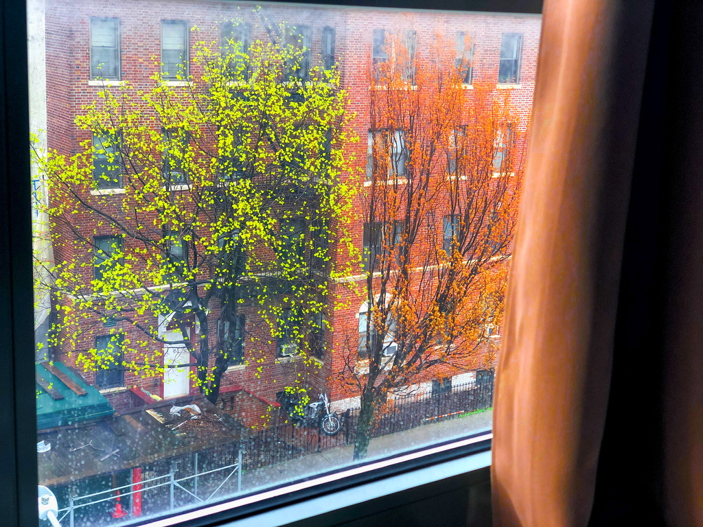

My name is Yam, and I am originally from Nepal. I came to the United States in 2016 to pursue a degree in software engineering. Unfortunately, I had to drop out of college due to personal reasons. However, I did not let this setback define my career.
After leaving college, I started working for a broker's firm. Over the past few years, I have gained a wealth of experience in the finance industry. I have developed a strong understanding of how the stock market works and how to help clients make informed investment decisions.
Hobbies
In my free time, I enjoy engaging in a variety of hobbies. One of my favorite pastimes is reading books. I find it incredibly relaxing to get lost in a good novel, and I always enjoy learning new things from non-fiction books. I also enjoy staying active, which is why I love swimming and hiking. There's something so refreshing about being in nature and pushing myself physically. On days when I feel like taking it easy, I like to go for strolls around the city. I find it fascinating to explore different neighborhoods and discover new restaurants, cafes, and shops and take pictures. Overall, my hobbies allow me to unwind, stay healthy, and continuously learn and grow.
Photography

The view from my room.
I enjoy capturing the beauty of the world around me through the lens of my camera. Whether I am exploring a new city, hiking through a scenic trail, or simply strolling around my neighborhood, I am always on the lookout for interesting subjects and compositions to photograph. I find that photography allows me to express my creativity and to share my perspective with others. It is also a wonderful way to document memories and to preserve moments in time. I am always seeking to improve my skills and to learn new techniques, and I am constantly inspired by the work of other photographers. Overall, photography is a fulfilling and rewarding hobby that allows me to see the world in a different light.
Foods:
I love exploring different cuisines, and I have a particular affinity for Nepali food. Some of my favorite dishes include momo, a type of dumpling filled with meat or vegetables, and chowmein, a stir-fried noodle dish that is often served with vegetables and meat. I also enjoy watching Korean mukbang videos, which are online broadcasts of people eating large quantities of food while interacting with their viewers. I find it fascinating to see the wide variety of Korean dishes that are featured in these videos, and it has inspired me to try new foods and flavors. Overall, my love for Nepali food and Korean mukbang has opened up a whole new world of culinary experiences and has allowed me to broaden my horizons.
Despite leaving college, I have determined to pursue a career in software engineering, and is always seeking new challenges and opportunities to learn and grow in the field.